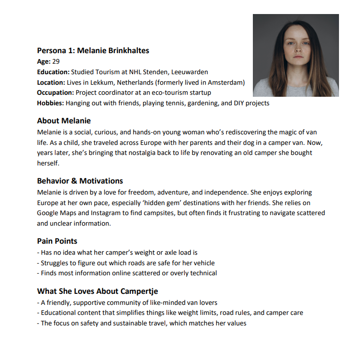

General Information
This branded website is publicly available at buas-media-interactive.github.io/my-website (please change text and hyperlink destination)
This website was created by… (only students listed below will be graded!)
- Rizdi van de Wiel (ID: 235360)
- Robby de Wijs (ID: 230705)
- Lars van de Reijt (ID:234548)
- Thijmen van Riet (ID:231992)
Content
Please clarify here the match between students and pieces of content. Make sure that you provide a link to the correct page within the website
| # | Student ID | Value | Name and link of content |
|---|---|---|---|
| 1. | 235360 + 230705 + 234538 + 231992 | Home | Content title |
| 2. | 235360 + 230705 + 234538 + 231992 | About us | About Us |
| 3. | 235360 + 230705 + 234538 + 231992 | Blog | Blog |
| 4. | 235360 + 230705 + 234538 + 231992 | Corporate | Corporate |
| 5. | 235360 + 230705 + 234538 + 231992 | Community | Community |
| 6. | 235360 + 230705 + 234538 + 231992 | Subscribe | Subscribe |

Production
Design Elements
Please provide a list of design elements alongside their justifications:
-
- #FF7E21 Orange is the heartbeat of Campertje’s visual identity. This vibrant and energetic hue symbolizes adventure, warmth, and enthusiasm, which are central to the experience of van life. It reflects the sunsets seen from a camper’s door, the bonfires with fellow travelers, and the welcoming energy of a community that’s always on the move. But besides all this, it resonates with our target group as it's the national colour of the Netherlands.
- Looking at psychological impact, orange evokes excitement and inspries action. It energizes our viewers, making them feel optimistic about their upcoming adventure
-
#004E4B
In contrast to the bright and energetic orange, our dark green color brings balance and calmness. Green stands for nature, trust, and peace. It reminds us of the quiet feeling you get when you're parked at a peaceful campsite, surrounded by trees and fresh air. This color reflects the slower, more relaxed way of traveling that camper life offers, and it also shows that Campertje cares about the environment and responsible travel.
- Font choices
- User interface patterns (e.g. grids, carousels, menu organizations etc.) The website makes usage of several familiar UI patterns that help users feel comfortable and confident when navigating:
- Chat GPT Prompts have been used for creating the layout of our sections: Examples: How do I create a card layout for our blog page with images and a call to action button in HTML and CSS? How do I create a contact form like this (image reference) in HTML and CSS? How do I create a section with 4 brand values next to each other?
- Every image used on our website is sourced from stock free image websites such as: Pexels and Unsplash (We don't know every single creator of the images, because we have downloaded a bunch of pictures to just have an images folder full with photos to use).
- The homepage header video is created with footage sourced from Envato Elements (Lars van de Reijt has a personal subscription).
- Your testing goals – in other words, what you are trying to learn about your website?
- Your testing methods, which includes information about:
- The test’s participants (number, match with target audience, etc.)
- The test’s setting (which material is used, is it done remotely, on campus, at home, etc.)
- The test’s protocol (what instructions are given, how it is recorded, etc.)
- Your testing results, which includes information about:
- Positive and negative aspects of the UI/UX that have been identified, ranked by importance.
- Improvements that have been implemented on the final website (or that would be implemented if doing so would be too complex)
- Publishing reels and informative posts on Instagram and Facebook
- Stories and polls to increase engagement
- Referring to the upcoming landing page of the website, where readers can read more about the topic of the post
- Reach objective: By the 1st of May, the following objectives should be reached:
- 100 social media interactions (likes, comments, shares) on Instagram and Facebook combined.
- At least 5 comments under posts on both platforms.
- Affect objective: Creating a sense of community within our target audience, where users are stimulated to respond actively, share their experience and to participate in discussions about camper trips and safety.
- Response objective: By the 1st of May, we expect to achieve:
- To gain 100 followers in total on Instagram and Facebook in total.
- An increase in traffic towards the website, where visitors can read in-depth blogs that are linked to the social media posts.
- The older target audience (35-60 years) is very active on Facebook, particularly through community interactions, group activities and sharing their personal experiences.
- The younger target audience (25-35 years) intensively uses Instagram for visual inspiration, short-form content and stories about travelling and outdoor lifestyle.
- The most used media platforms within our interviews were Facebook and Instagram (respectively 89% and 76% of the interviewees).
- The peak hours of social media consumption are in the evening (between 18:00 and 22:00).
- The most important reason to consume social media is to get inspired and exchange experiences with others.
- The first content was shared on Instagram and got more than 1.1k views. These numbers are mainly the result of the support of the group members that promoted the page within their network.
- The content was seen by many different people because of hashtags and algorithm boosting.
- From this, we learned how important the first push is for a campaign: a kick-off post with a lot of shares and reactions helps the algorithm to reach new viewers.
- In this week, our post with a carousel got the highest interaction.
- Viewers liked that the topic was split into short parts that they could swipe through.
- Also, this week got more clicks to the profile, which shows that the audience became more curious about the Campertje brand.
- In week 3, our post got the lowest reach. It was a reel that didn’t perform well.
- Also, we shared fewer stories than normal, which resulted in a lower interaction as well.
- This showed us how important it is to stay consistent with your campaign. Otherwise, people will forget you quickly.
- In the final week of the campaign, we noticed a rise in comments and shares again.
- We used more personal content this time: about camperlife and how to use IKEA hacks in your camper.
- This created more engagement, because people could relate to it and wanted to share their experience.
- The most effective time to post was at 12:00 (Instagram) and 19:00 (Facebook).
- Carousel posts gave the most engagement.
- 56.7% of the views came from people who did not follow the page yet.
- This means the algorithm is working well, but we need to keep viewers on the page and turn them into followers.
- The reels didn’t perform as well as we expected: they got a lower amount of interactions (32.2%).
- We didn’t use the stories feature enough. This only accounted for 6.9% of the views.
- Keep doing research into the preferences of the target audience (e.g. formats, frequency).
- Post 4 to 5 times a week on both platforms.
- Use stories daily to keep the viewer involved. Examples: polls, BTS, open questions, tips.
- Focus mainly on Instagram, but still use Facebook for the older segment of your audience.
- Try to include a contest (e.g. “Win a camper travel kit”).
- Keep varying your content between tips, photos, personal stories and questions.
- Use niche hashtags to reach more targeted viewers.
- Keep using the orange button for your CTA’s.
- Write down measurable objectives for each campaign. Examples:
- “We want to get 10 shares with this post.”
- “This week we want to get 15 new followers.”
- Instagram: https://www.instagram.com/campertje.nl/
- Facebook: https://www.facebook.com/profile.php?id=61574661054718&locale=nl_NL
- Carousel posts worked best and generated the most engagement.
- Stories were underused — something we would fix by including them in our weekly schedule.
- Personal content (e.g. IKEA hacks, relatable camper topics) got most shares and comments.
- Reels did not perform well, partly due to lack of visual consistency and editing style.
- The overweight issue with campervans: Many campervans exceed legal weight limits, which reduces fuel efficiency, increases wear and tear, and can lead to fines.
- Campervans too large for narrow roads: Concerns about road safety and route suitability. Traditional motorhomes struggle on narrow European roads and in remote locations, limiting accessibility.
- No nearby repair services or technical support: When traveling, campervan users may not have access to garages, services, or technical help.
- Resource management: Locating facilities for waste disposal and water replenishment is often a significant concern for travellers.
- Providing consumers with educational advice and resources: Offer guides, tutorials (for operation and maintenance), a digital checklist (covering packing, setup, safety, and troubleshooting), and offer help to users.
- Service Network: Establish partnerships with campsites and service providers, including a map of certified camper garages and support points.
- All-in-one platform: For everything you need to know or want while traveling with your campervan.
- Community engagement: We foster a supportive community where campers can share experiences, tips, and solutions.
- Sustainable implementation: Promoting eco-friendly practices and solutions.
- User engagement: Monitor website and social media interactions, including video views and checklist downloads.
- The subscribed members: The number of people who have subscribed to our membership on the website.
- Community feedback: Analyze user feedback to enhance offerings, such as emergency services and garage locator usage.
- Marketing: The average salary for marketing is €5101 per month (for the paid social media ads and content marketing).
- Web design: €229 per month.
- Research and development: The average salary is €1000 per month (for improving platform features and user experience).
- Safety concerns: Many participants mentioned feeling unsafe during travel due to the lack of information about roads and nearby facilities.
- Value of shared experiences: Users expressed a desire to hear from other campers about travel routes, equipment, and tips.
- Lack of organized guidance: Especially for beginner vanlifers, the market felt overwhelming and scattered.
- Facebook & Instagram usage in the Netherlands – Newcom Research & Consultancy (2024). Retrieved from: https://www.newcom.nl/socialmedia/
- Marketing salaries in NL – Glassdoor. Retrieved from: https://www.glassdoor.nl/Salarissen/marketing-salaris-SRCH_KO0,9.htm
- Web design costs – Hostnet Nederland, 2023.
- Freelance hourly rates (research + dev) – TechGrounds Report 2022.
- Target group behavior – Interview results from 8 campervan users (April 2025).
Museo Sans
We chose Museo Sans because it feels modern, friendly, and easy to read—just like how we want Campertje to feel. Its letters are clean and simple, but also a little bit round, which gives them a softer, more welcoming look. This makes the font look professional without being too serious or distant. It helps us show that Campertje is a brand you can trust, but also one that’s fun, relaxed, and made for everyone. Museo Sans works well for different types of texts—whether it's for big titles or smaller paragraphs. That makes it a flexible font, perfect for a brand that lives both online and on the road. In short, Museo Sans fits perfectly with our community-focused brand: clear, inviting, and full of personality—just like the camper lifestyle.
Header: The header of the Campertje website is designed to be simple, familiar, and user-friendly, in line with common web navigation patterns. The logo is placed on the left side, which is a standard design convention for easy brand recognition. It also acts as a clickable home button, allowing users to return to the main page from any point on the website. To the right, we included a clear and minimal navigation bar with four links: Home, Community, About Us, and Subscribe. The “Subscribe” link is styled as a CTA button, visually standing out and supporting our marketing strategy to build community engagement.
Footer: The footer serves two important purposes: creating a professional finish to the site and connecting users to our social media presence. We included logos of Instagram and Facebook, both of which link directly to our brand pages. These icons are familiar and recognizable. The right side of the footer displays the text “Campertje 2025 – All rights reserved,” giving the website a credible and complete look, commonly seen across professional platforms. The footer uses consistent brand colors and layout spacing.
Home Page: Our home page opens with a full-width background video, which immerses users immediately and reflects the adventurous lifestyle we promote. This dynamic background is paired with a motivational slogan—“Never Stop Traveling”—and a short sentence explaining our brand promise. A cta “Explore” button is added to guide users directly into the Community page, keeping the interaction intuitive and action-oriented. Right below, a custom hero section further emphasizes our mission, combining a short paragraph, two CTA buttons, and an image of travelers with a camper. This section explains what Campertje is and who it’s for, helping visitors quickly understand our unique value proposition.
Core Values Section: This section breaks down our brand values into four key pillars: Education, Community, Safety, and Adventurousness. Each value is paired with a custom icon and a short explanation. The layout follows a grid, offering a clear and well-balanced visual structure that supports quick scanning. By presenting values in this way, we align the content with both user needs and the emotional tone of the brand. It helps users connect with our personality and see what makes Campertje more than just a travel platform as it’s a community-first brand.
News Section & Blogs Section: The News and Blogs section uses a card-based layout. Each card includes an image, a short text preview, and a “Read More” CTA. This allows users to quickly preview articles and click through if they’re interested. This structure supports a content marketing strategy, where informative blog posts provide real value to users. Topics like checklists, must-visit places, and camper tips make the website feel both practical and inspiring, reinforcing Campertje’s position as a reliable travel companion. On our homepage you'll see a preview of 3 blogs, while on our community page your able to view every blog.
Contact Form: At the bottom of every page, we included a Contact Us form to encourage communication between visitors and the Campertje team. The form includes fields for name, address, phone number, and a message box, plus a date picker. This reflects our user-centered design approach, giving visitors a clear and easy way to reach out without ambiguity. This promotes trust and signals that we are open, responsive, and community-oriented.
About Us: The About Us page provides context and personality. It begins with a split section: “Who is Campertje?” and “Why Campertje?” These are positioned side-by-side, offering a clear layout that helps users understand both the origin and mission of the brand at a glance.
The use of the dark green background creates visual separation from the rest of the site, helping this section stand out while reinforcing the brand’s grounded, nature-focused color scheme.
Below, the Core Values are repeated intentionally. This repetition reinforces the brands consistency across different parts of the site and serves as a visual anchor.
The Meet the Team section uses clean profile cards with rounded edges and subtle shadows—design choices that create a friendly and modern aesthetic. It adds a human face to the brand, helping build trust, which is especially important in community-based platforms.
Subscription Page: The Subscription page is short, clear, and focused—exactly what a call-to-action page should be. The content explains the benefits of subscribing in a simple bullet-point list, which is easy to scan and highlights the value quickly. The “Subscribe Now” button has the orange brand color, which stands out visually.
Credits
ChatGPT has also been used for explanation of shown errors in DreamWeaver.
Testing Report
Please write about…
Marketing
We are Campertje! A community-based platform where Dutch camper van lovers can share their tips and trips. Whether you are looking for a picturesque camping spot in nature or a handy solution for your overweight van, at Campertje, it is all about connection, safety and convenience on the road. In this part about marketing, we explain our marketing campaign and explain how we try to create awareness for this platform.
Campaign context and promotional activities
The campaign is focused on positioning Campertje as a strong brand within the Dutch camper van community. We want to increase awareness around the platform and stimulate community engagement through social media and our website.
What did we do?
On Instagram, we mainly focus on sharing informative posts and giving the viewer teasers of the blogs we upload on the website. We uploaded on Wednesday and Sunday at 12:00h lunchtime.
We decided on this time, since our target audience mentioned in the interviews that they are mostly active on social media between 12 and 1 p.m. Furthermore, Wednesday is a typical break moment, and Sunday is ideal to inspire people with new plans or ideas for the upcoming week.
For the post design, we tried to work within the frames of our style guide: orange and green as main colours, with a minimalistic and professional feel. All visual content fits the values of Campertje: awareness, safety and connection.
Objectives
All the campaign decisions that we made were based on our measurable goals tied to the planning and communication plan. The goal is to create more traffic to the website, where visitors can find blogs with more explanation about the social media posts and to build up a community within our target audience.
Channels/Platforms
For the execution of Campertje’s marketing campaign, we chose Facebook and Instagram as primary platforms. This decision fits the social media habits of our target audience and is supported through our research in the interviews and existing research.
Facebook and Instagram are still belonging to the biggest social media platforms worldwide (Statista, 2024). Facebook offers many possibilities for building communities and interaction, while Instagram excels in visual storytelling and fast interaction. These insights fit perfectly with the vision that we want to convey throughout the marketing campaign of Campertje.
Clarification
Our target audience consists of Dutch camper van users in the age category between 25 to 60 years. We can separate this into two subsegments:
Research shows that 70% of the Dutch Facebook users are active daily (Newcom, 2024). Furthermore, Instagram users spend 2 to 3 hours daily on the platform on average, whereby visual content such as reels and stories is mostly consumed.
Interview social media insights
In addition, we asked questions regarding social media usage to our camper van users that we interviewed. They gave us the following insights about their social media behaviour:
Conclusion: Based on the existing market research and our interview insights about social media, we decided to use Facebook and Instagram as the main platforms for our campaign. Both channels offer exactly the tools that are required to generate traffic to the website and create an active community within our target audience.
Learning points
During the marketing campaign for Campertje, we learned a lot about planning, execution and adapting the social media strategy. You can find a reflection based on our communication & marketing plan goals below.
Week 1
Week 2
Week 3
Week 4
Conclusion
When looking at all four weeks, we can conclude the following:
What went less well
Future planning
Based on this campaign, we advise the next steps:
Professionalism
Throughout the campaign, we made sure to follow our brand style guide: green and orange colour scheme, calm tone of voice and visuals that fit our values (safe, connected, natural, helpful).
We always wrote in a warm, friendly tone and used emojis to make our copy more relatable. The structure of the captions was also consistent: short intro, bullet points and a closing question or CTA.
What could be improved is the consistency of our Reels: we didn’t use a template or colour system for these, so they now look different. Next time, we would create a template for Reels, where we always use the same fonts, colours and effects to improve our recognition.
Social media links
Attachment
| Week | Reach | Engagement | Post type | Platform |
|---|---|---|---|---|
| Week 1 | 1.1k views | High (reactions + comments) | Carousel, reel | |
| Week 2 | +300 views | Moderate (few comments) | Image post | Instagram + Facebook |
| Week 3 | Lowest reach | Low | Reel | |
| Week 4 | +250 views | More shares and saves | Carousel + reel | Both platforms |
Takeaways & Lessons learned
Summarising our campaign, we can conclude that it’s very important to create consistency in your content planning, especially when working with algorithms. After week 1 and 2, we noticed a decrease in reach and engagement due to fewer uploads and less variation. Our biggest lessons:
We also learned how important it is to start strong with a launch post that gets promoted by your network. That first boost is key for the algorithm to pick up your content and recommend it to others. After that, consistency and interaction are what keep your reach stable.
Extended Attachment – Platform Insights
| Week | Platform | Post Type | Reach | Interactions | Shares | Comments | New Followers |
|---|---|---|---|---|---|---|---|
| Week 1 | Carousel + reel | 1,100 | 87 | 11 | 4 | 19 | |
| Week 2 | Carousel + image | 460 | 38 | 6 | 2 | 10 | |
| Week 3 | Reel | 180 | 17 | 1 | 0 | 3 | |
| Week 4 | Instagram + Facebook | Carousel + reel | 510 | 42 | 8 | 6 | 14 |
These statistics were retrieved from Instagram and Facebook insights available to the Campertje account during the campaign. Due to time constraints and platform limits, deeper engagement analytics (such as click-through to the website) were not tracked. However, we see clear growth in brand awareness and page activity.
Management
1st Lean Canvas before Problem Interview

2nd Lean Canvas after Problem Interview

3rd Lean Canvas after Solution Interview

Problem
Solution
Because of these reasons, Campertje has developed a solution to address the challenges that travellers face on their adventures.
Customer segments
Target audience: our camper lovers, aged 26-68. Those who are more financially stable and interested in sustainable travel. Families traveling with children or older adults. Values that drive out in adventures, education, community, and safety. However, there are also new campervan owners seeking guidance and community support.
Unique value proposition
Campertje has three key value propositions that make their brand and website unique:
Unfair advantage
We also have some unfair advantages, stemming from being community-driven (organic growth through user-generated content), our brand loyalty (strong engagement built on trust and a consistent user experience), and the integration of local stories and real-time tips (available on our website and social media).
Channels
After conducting thorough research on our target audience, we determined that these three channels would be the best fit for Campertje. The use of social media platforms Facebook and Instagram. Partnerships with campsites and repair services, along with our own website, serve as the central hub for services and community engagement.
Statistics for Facebook
Statistics for Instagram
Key metrics
Revenue streams
Campertje mainly wants to generate revenue from subscription services. Where customers get a premium membership with exclusive content and perks. Such as additional educational advice and resources, including guides, tutorials, digital checklists, and service networks. We offer a subscription price of €35 per month, payable on a monthly basis.
After further research, we also found that advertising with partner promotions and targeted ads would give us €1000 per month. We knew that having our subscription on average with other subscription offers was the best match with the other earnings from advertising.
Yearly calculation: Campertjes’ yearly revenue stream would be generated through our membership, which costs €35 per month, with an average of 250 people invested in our website due to brand loyalty. Additionally, our advertising generates €1000 per month. Estimated revenue: (35 × 250 + 1000) × 12 = €117,000 yearly earnings
Cost structure
Campertje’s average costs would be made from marketing, web design, research, and development:
Total: Monthly costs: €6,330 Yearly costs: €6,330 × 12 = €75,960
Services/Products
At Campertje, we believe that camper travel is more than just a means of transportation; it's an experience. That’s why our services should make camper van life accessible and enjoyable for everyone, whether you’re a beginner or an experienced traveller. By offering educational content and a vibrant community, we aim to inspire and guide people toward unforgettable camper experiences.
The website offers content designed to educate campervan users and connect them through a supportive community, where campervan enthusiasts can share their experiences, tips, and solutions. The website also offers a premium membership, which includes exclusive content and additional perks.
The campervan user will receive guides, specific tutorials on the operation and maintenance of the campervan, a digital checklist to review before starting your adventure (including packing), help with safety (troubleshooting), and a service network to assist you when needed. All doing this with eco-friendly solutions.
Validation of assumptions
To validate our ideas and the challenges that campervan users face, we conducted interviews with eight campervan users. We discovered several important insights that helped shape Campertje’s offerings:
These findings reinforced the idea that there’s a need for a centralized and trustworthy platform. We translated these learnings into features on our website: an interactive map, blog posts with tips and stories, and a premium membership that gives access to more technical content and verified locations.
The validation through our interviews confirmed that Campertje is filling a gap in the market. It’s more than just a platform — it’s a space for connection, reassurance, and inspiration.
Sources
This is a list of our sources, documents and calculation foundations used to create the Management section. All data, references and calculations have been cross-checked where possible.
Appendix
Please use the list below to provide links to evidence for all parts of your justication. Please double-check all links before delivering the website. Do not hesitate to refer to these numbers above.